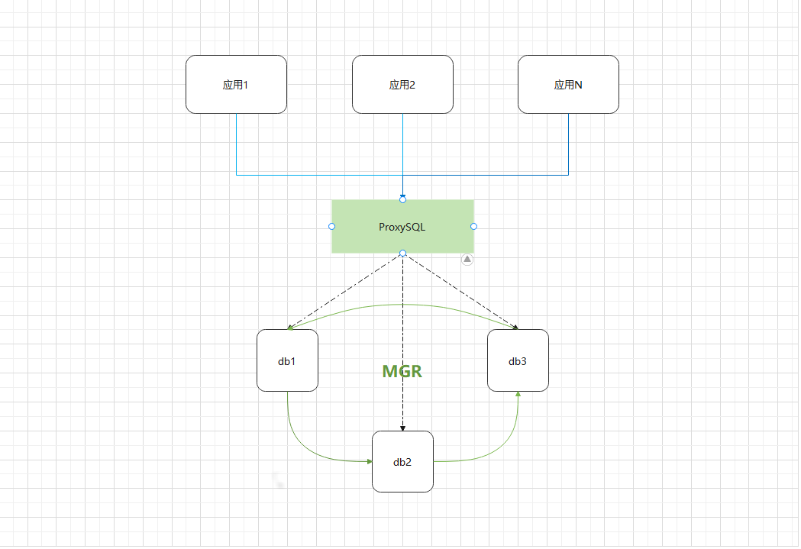

一、前言
因为现在的架构采用的是单一数据源的形式，在并发请求大的时候，应用是可以集群的，所以应用层不是我们的瓶颈，而数据库变成了我们的瓶颈，所以也提供数据库集群的方案。
目前采用的数据库是MySQL，针对MySQL的集群，MySQL自己就提供了支持，即主从复制，从主从复制中又引生出了多种主从方案，如单主多从，多主多从…。
在MySQL的主从复制中，总有一个问题是不可避免的，那就是从库的数据延迟问题，只支持数据的最终一致性，根据实际的情况，可能会出现几秒甚至到几小时的延迟。那么有没有办法解决这个问题呢？有。在MySQL5.7.17版本推出了一个新功能，那就是MySQL Group Replication （MGR）组复制。基于组的概念，把一群数据库放到一组中，写的数据要等所有的数据库都提交了再返回，但是在MGR中，还是存在数据一致性的问题。是在MySQL8.0.14版本增加了一个新特性：MGR读写一致性；添加参数group_replication_consistenc来控制数据一致性的问题。通过配置该参数的不同值，可以彻底的达到读写一致性。
如果使用MGR，在写数据的时候，性能会略有下降，V10中，考虑我们在写数据时是可以容忍一部分（如果是三台服务器集群，延长大约几十毫秒）等待时长的，但是数据的一致性问题要得以保证。所以我们考虑采用MGR强读写一致性。
二、数据库代理
要使用多台的MySQL数据库集群，那么就需要考虑代理的问题，要统一访问点。在数据库代理这一块，也有很多的解决方案，如主流的：
-
Mycat : 开源社区维护，用的人挺多的，社区也比较活跃，但是目前官方提供的只支持到5.7的版本，经过测试，支持MySQL8.0以上需要修改一下源码来兼容。
-
MySQL-proxy : MySQL同源产品，但是后面基本不维护了，不少其他代理中间件是在它的基础上加强的。
-
Atlas ： 360开源的，算比较活跃，基于MySQL-proxy修改的。
-
…
然而在对比多个中间件的后，我们采用了另一个中间件，ProxySQL。一个基于GPL协议开源的MySQL代理中间件，提供动态配置，监控…等等强大的功能，并且维护也稳定，各文档也丰富。
三、架构
综上所述，我们的数据集群架构图如下：

🤔 说明
数据库中间的代理层是可以随时去掉的，去掉后数据库就只能使用单台，不能使用多台数据库做负载均衡。